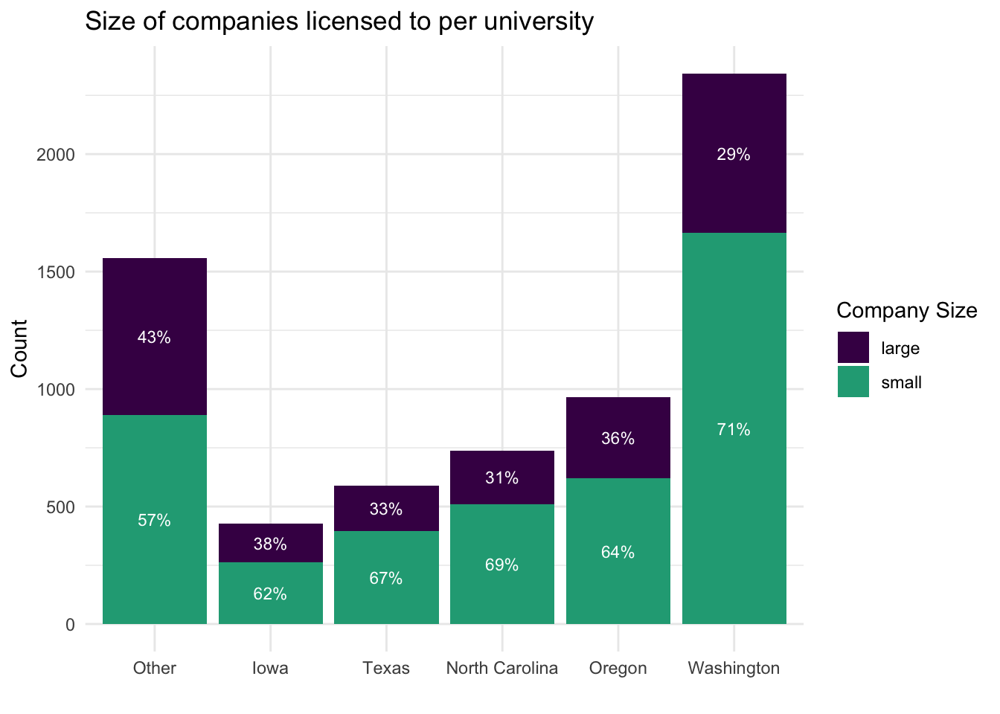
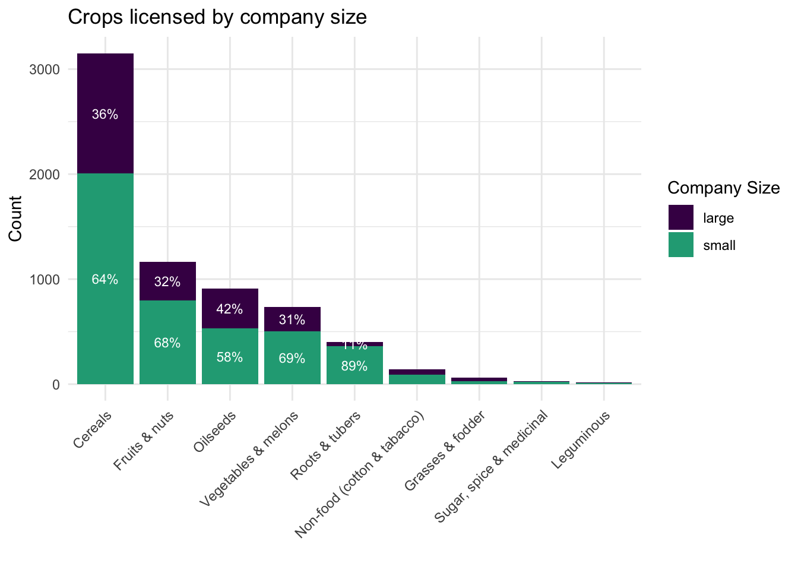

3 Who buys what?
| A summary of plant material licensing for LGU Agricultural Colleges, 2000-2020 |
| Authors: Adam Vera, Liza Wood, Victoria Fletcher |
| Date: 2023-09-27 |
3.1 Introduction
US Land Grant Universities (LGUs) are an important contributor to public plant breeding. Universities develop different plant material and varieties and then (increasingly) license the plant material they develop to third parties to commercialize and/or continue to innovation. This report summarizes plant variety licenses between LGUs and the companies that purchase these products. This analysis explores the role specific universities have in this market, the breakdown of crops licensed by university, and the financial profile of the companies that purchase the licenses from LGUs.
We base this report on data collected via public records requests. These records include licensing agreement data (what material is being licensed and to whom) between 2000-2020 for 25 LGUs (Arizona, California, Connecticut, Hawaii, Idaho, Illinois, Iowa, Kansas, Louisiana, Maryland, Michigan, Minnesota, Mississippi, Missouri, Montana, New Hampshire, North Carolina, Ohio, Oklahoma, Oregon, Rhode Island, South Dakota, Texas, Washington, Wyoming. We requested data from all 50 states, but only received data from half due to public records requests denials or prohibitive costs.
Key take-aways are as follows:
- 7480 licensing agreements across 25 Land Grant Universities between 2000-2020
- Agreements are with 1161 companies and 141 other entities (organizations, universities, individuals, etc.)
- 1918 unique plant varieties and/or breeding lines are licensed
3.2 What crops are being licensed?
We categorize the crops LGUs are developing into one of 10 groupings designated by the FAO Agricultural Census, and we can summarize these crop types across different universities in our data. Note that we remove ornamental plants from this analysis to focus in only on food and cash crops.
The crops most often licensed resemble the general trend of what we see in LGU plant variety development protection: cereals, fruits and nuts, and oilseeds. The crop licensed the most of all crop categories is cereals, making up 46% of licenses. The next most popular categories are fruits and nuts (17%) and oilseeds (16%). Cereals in our licensing data are comprised of primarily wheat (73%), with barley a far second (18%), the remaining nine crops in the cereal category leaving a long tail (e.g. sorghum, oat, corn, rice, millet, teff).
| Crop category | Count of licenses | Percent of all licenses |
|---|---|---|
| Cereals | 3232 | 46% |
| Fruits & nuts | 1223 | 17% |
| Oilseeds | 1112 | 16% |
| Vegetables & melons | 753 | 11% |
| Roots & tubers | 422 | 6% |
| Non-food (cotton & tabacco) | 145 | 2% |
| Grasses & fodder | 64 | 1% |
| Leguminous | 44 | 1% |
| Sugar, spice & medicinal | 28 | 0% |
Washington dominates the cereal licensing at 2122 licenses, licensing 65.6% (2122/3234) of cereals. The next largest producer of cereals is Oregon, at 15% (485/3234). In the table below, we calculate the count and percentage of crops in all of the states in our sample.
3.3 How has licensing changed over time?
We look at the date of the licensing agreements to understand trends in university licensing over time. Across the 25 universities, licensing has been steadily increasing, which aligns with the trends of plant variety innovation generally (Section 1).

The amount of licensing varies by state considerably. The number of licenses over the twenty year periods= ranges from only 1 in Arizona to 2378 in Washington, with an annual average of 22 licenses.
To evaluate this variation across states, we group licenses into five-year time periods to present changes in licensing trends across different universities. Given our limited ability to observe trends across all 25 universities at once, we also choose to identify and highlight only the top five universities by license count (Washington, Oregon, North Carolina, Texas, Iowa), while the remaining twenty universities are considered to be “Other”. This is represented in a plot below per five year time period.
3.4 Who is licensing LGU plant material?
Our team has used the licensing records to build out a data base of companies and organizations who have licensed material from LGUs. We have relied on the D&B Hoovers data base for most of this company data, including information such as the location of company headquarters and their size, as measured by sales (2022) and total number of employees across their locations.
LGU plant material has been licensed to 1161 companies and 141 public, non-profit, or individual licensees. The most active licensees are listed in the table below, all of whom have purchased over 30 licenses in the last 20 years.
3.5 What do we know about company licensees?
The companies licensing LGU plant varieties are primarily located in the United States with few international companies. The table below shows company headquarters’ location by country, where 83.8% (973/1161) of companies are domestic.
Using the data from D&D Hoovers, we identified the the total sales per company as an estimate of company size. This sales value was calculated as the highest sales number per company level in order to capture company’s size at the highest scale, rather than just one branch or region. These sales data can be used to categorize companies into categories: small and large. The U.S. Small Business Administration determines what is a small business based on its industry. The average annual sales for the farming industry to be considered a small business is less than 3 million dollars. (Note: Of the 263 companies (23%) that we could not identify in the D&B database, we assume that they are small because D&B preferences larger companies in its database).
With this $3 million division between small and large businesses, we find that 868 companies fall into the small category, where average small company makes $685K dollars annually (2022 data). On the other hand, 293 companies fall into the large category, where average large company makes $6.6B dollars annually.
3.5.1 Do certain LGUs trend towards small or large company clients?
On average, universities seem to license slightly more to smaller companies, with large companies accounting for about a third of licenses. We evaluate the relationship between plant variety licenses and the types of companies that purchase those licenses. Of the 6,966 licenses that we can connect to companies, 35% are to large companies. The percentage of small versus large companies that are licensees per university is quite similar across all states. For example, 29% of Washington’s licenses are to large companies, though this number slightly increases: 34% of Texas’s, 36% of Oregon’s, 37% or North Carolina’s, 38% of Iowa’s and 43% of Other university’s licenses are to large companies.
DRAFT: Add in the percent of all companies that are large to identify if their licenzing activity is proportional to the number of companies. The result is large companies account for about 25% of companies but 30-40% of licenses, so they are slightly more active.

3.5.2 Do certain crop categories trend towards small or large company clients?
There does not appear to be a clear trend whereby large companies are licensing specific types of crops. Large companies account for 42% of oilseed licenses, between 31-36% of vegetable, fruit and nut, and cereal licenses, though only 11% of roots and tubers.

3.6 DRAFT: Variety licensing networks
The figures below display, by crop category, what operations are licensing material the most from LGUs. Circles are sized based on the number of license agreements made, and colored by the region in which the operation is based: West in dark purple, Northeast in dark blue, South in aqua, North Central in green, any companies outside of the US are in yellow, and non-companies in grey.